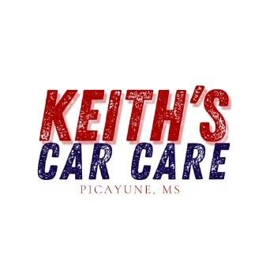

Diagnostics & repairs
Finding the real problem and fixing it right.
Ask about diagnostics & repairs →
Keith's Car CareHonest, done-right car care on Highway 43 in Picayune from a friendly, knowledgeable and experienced crew.
Finding the real problem and fixing it right.
Ask about diagnostics & repairs →Everyday maintenance and repairs.
Ask about brakes, exhaust & tune-ups →Routine service to keep you on the road.
Ask about oil changes & tires →2373 MS-43, Picayune, MS 39466
Call nowGet directionsEmail keithscarcareservice@gmail.comFacebook page| Mon–Fri | 8 AM–5 PM |
|---|---|
| Sat–Sun | Closed |